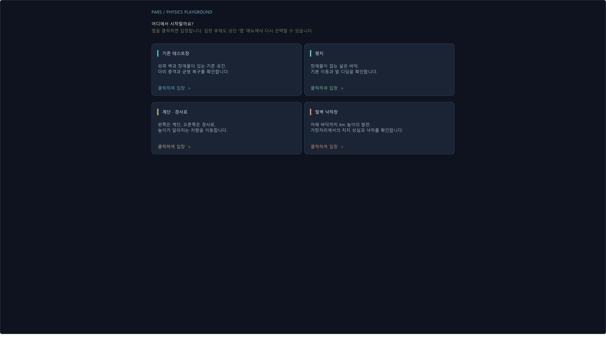
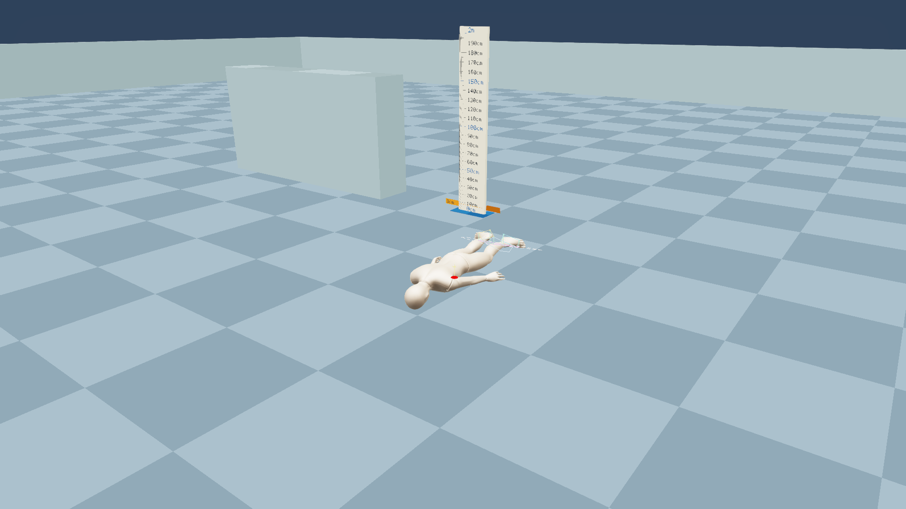

PARS · 변경 검토 · 2026-11-09 12:24 KST
처음 실행할 때 맵을 선택해서 입장
후보 구현과 검증 보고서를 제시한 뒤 사용자가 “커밋해줘”라고 승인했습니다. 검증한 코드와 실행 파일의 해시가 그대로임을 재확인하고, 승인된 변경을 완료로 확정했습니다.
일반 실행은 전체 화면 ImGui 맵 선택으로 시작합니다. 기존 테스트장, 평지, 계단·경사로, 절벽 낙하장 중 카드를 클릭하면 해당 맵에 입장합니다. 상단 맵 → 맵 선택 화면으로에서 다시 선택할 수 있습니다.

동작과 변경 범위
- 선택 전에는 캐릭터와 맵을 만들지 않습니다. 선택한 프레임 다음 Update에서 GPU 작업을 마친 뒤 지형을 생성하고 캐릭터를 준비합니다.
- 맵 선택 화면을 다시 열면 월드·비교 시뮬레이션·에디터 갱신이 멈춥니다. 현재 맵으로 돌아가기는 기존 상태를 이어갑니다.
- 맵 카드를 다시 선택하면 이전 지형을 해제하고 새 지형으로 교체합니다. 캐릭터 위치·이동과 대기 애니메이션, 더미·발사체·낙하 상자를 초기화합니다. 비교 창을 닫고 비교 결과를 초기화하며 플레이어 카메라와 조작을 복구합니다.
- 지형 렌더링은 충돌체와 같은 위치·회전·크기 목록을 사용합니다. 기존 캐릭터 초기화 버튼도 현재 맵의 시작 위치와 캡슐 반높이를 사용합니다.
- 기존 자동 검증 인수는 테스트장으로 바로 들어갑니다.
-physics 0,-model분기는 유지했습니다. 이 두 분기의 실제 화면은 이번 검증에 포함하지 않았습니다.
| 맵 | 구성 | 정적 충돌체 |
|---|---|---|
| 기존 테스트장 | 기존 30×30m 바닥과 외곽 벽·장애물. 기존 생성 순서와 재질 유지. | 6 |
| 평지 | 장애물이 없는 30×30m 바닥. | 1 |
| 계단·경사로 | 18cm 높이 8단 계단, 높이 1.44m 경사로와 상단 발판. | 12 |
| 절벽 낙하장 | 12×12m 상단 발판, 6m 아래 60×60m 바닥. | 2 |
낙하 상자, 플레이어, 더미는 공통으로 사용합니다. PD 제어식·토크 상한·물리 애셋은 수정하지 않았습니다.
검증 결과
- Debug / Windows(x64) 빌드 통과. 최종 빌드 로그, 기준 빌드 로그.
- 마우스로 8회 연속 맵 진입·전환 통과. 매번 정적 충돌체가 6 / 1 / 12 / 2개로 일치했습니다. Actor는 3개이며 PhysX 오류는 0건입니다.
- 선택 화면 정지와 현재 맵 복귀 통과. 0.7초 대기 동안 물리 스텝과 캐릭터 위치가 바뀌지 않았고 복귀 후 조작과 스텝이 재개되었습니다.
- 비교 실행 중 전환 통과. 선택 화면에서는 비교 기록이 멈췄고, 절벽 맵으로 전환한 뒤 비교 기록 0개·비교 화면 비활성·플레이어 입력 활성 상태를 확인했습니다.
- 각 맵으로 첫 진입 및 선택 없이 종료 통과. 기존 테스트장 외 세 맵도 새 프로세스에서 직접 선택했습니다.
- 충돌 높이 조회 통과. 평지 0m, 계단 첫 단 0.18m·마지막 단 1.44m, 경사로 중앙 약 0.728m, 절벽 바깥 -6m를 확인했습니다.
- 기존 물리 회귀 비교 일치. 대기와 몸통 충돌 각각 720 고정 스텝, 31,680개 바디 표본의 CSV가 변경 전후 바이트 단위로 같습니다. 충돌 이벤트와 상태 CSV도 같습니다.
최종 실행 로그 · UI·월드 계측 · 물리 비교 원본 지표
실제 화면 확인


입장 직후 화면에서 캐릭터·더미가 지면에 배치되고 각 지형이 구분되는 것을 확인했습니다. 비교 종료 후 UI에서 비교 창이 닫힌 것도 확인했습니다. 위 지형 이미지는 UI를 제외한 실제 SceneColor 버퍼입니다.

몸통 충돌 시험은 두 버전 모두 더미가 바닥에 엎드린 상태로 종료됐습니다. 이 기존 복구 상태는 이번 변경에서도 그대로이며, 회귀 통과는 전후 결과가 일치한다는 뜻입니다.



물리 비교 조건과 측정값
같은 Mixamo 모델·Mixamo.physics.json·Idle/Walking/SlowRun 애니메이션·저장된 CharacterImpact/DummySupport/Projectile 설정을 사용했습니다. 기존 테스트장의 바닥과 벽, 시작 자세, 접촉 설정을 유지했습니다. 고정 시간 간격 1/60초, 실행 12초입니다. 대기는 case 0, 몸통 충돌은 case 2의 기존 입력(2초 대기 → 접근 → 후퇴 → 재접근 → 정지)을 사용했습니다.
PA 질량 73kg, 루트 질량 8.1541kg, 독립 몸통 충돌 캡슐 30kg, 반지름 배율 1.15·높이 배율 1.14입니다. 플레이어 수동 루트 지지, 더미 자동 지지 설정을 양쪽에서 동일하게 사용했습니다. 기준 지면 재질은 정지 마찰 0.9 / 동마찰 0.7 / 반발 0입니다.
아래 RMS는 그룹의 전체 바디·시간 표본으로 계산했습니다. 위치는 애니메이션 목표에 대한 거리, 회전은 목표에 대한 각도입니다. 최대값과 발생 시점은 양쪽이 동일합니다. 발 그룹에는 Foot·ToeBase, 팔다리에는 Arm·Hand·Leg를 포함했습니다.
| 조건 / 대상 / 부위 | 위치 RMS cm 기준 → 후보 | 회전 RMS ° 기준 → 후보 | 위치 최대 cm / 시점 | 회전 최대 ° / 시점 | 후보−기준 |
|---|---|---|---|---|---|
| 대기 / 플레이어 / 골반 | 1.099 → 1.099 | 0.021 → 0.021 | 1.916 / 0.017s | 0.056 / 0.100s | 0 |
| 대기 / 플레이어 / 발·발가락 | 1.110 → 1.110 | 4.406 → 4.406 | 1.965 / 0.017s | 7.572 / 0.050s | 0 |
| 대기 / 플레이어 / 팔·손·다리 | 1.099 → 1.099 | 0.035 → 0.035 | 1.937 / 0.017s | 0.329 / 0.150s | 0 |
| 대기 / 더미 / 골반 | 0.000 → 0.000 | 0.022 → 0.022 | 0.000 / 3.767s | 0.056 / 0.100s | 0 |
| 대기 / 더미 / 발·발가락 | 0.000 → 0.000 | 0.024 → 0.024 | 0.000 / 0.050s | 0.069 / 0.733s | 0 |
| 대기 / 더미 / 팔·손·다리 | 0.000 → 0.000 | 0.024 → 0.024 | 0.000 / 2.050s | 0.079 / 1.417s | 0 |
| 몸통 충돌 / 플레이어 / 골반 | 4.740 → 4.740 | 1.715 → 1.715 | 48.560 / 3.467s | 8.265 / 7.600s | 0 |
| 몸통 충돌 / 플레이어 / 발·발가락 | 5.827 → 5.827 | 14.072 → 14.072 | 55.271 / 3.483s | 74.569 / 3.783s | 0 |
| 몸통 충돌 / 플레이어 / 팔·손·다리 | 5.623 → 5.623 | 9.302 → 9.302 | 51.541 / 3.467s | 97.961 / 3.650s | 0 |
| 몸통 충돌 / 더미 / 골반 | 166.780 → 166.780 | 77.008 → 77.008 | 196.406 / 7.967s | 95.203 / 3.667s | 0 |
| 몸통 충돌 / 더미 / 발·발가락 | 64.287 → 64.287 | 93.723 → 93.723 | 93.130 / 3.783s | 119.127 / 12.000s | 0 |
| 몸통 충돌 / 더미 / 팔·손·다리 | 171.384 → 171.384 | 75.730 → 75.730 | 257.040 / 3.733s | 133.678 / 3.783s | 0 |
좌표·쿼터니언·속도·추종 오차·drive_error의 저장된 표본 차이는 모두 0입니다. 이는 기존 동작을 보존했다는 회귀 결과입니다. 원래 존재하는 추종 오차를 개선했다는 의미는 아닙니다.
한계와 확인하지 않은 항목
- 새 계단을 오르는 보행 품질과 절벽에서 떨어질 때 버둥거림·착지·복구 동작의 품질은 이번 검증 대상이 아닙니다. 새 낙하 제어기는 추가하지 않았습니다.
- 발 떨림·미끄러짐과 충돌 후 복구 전 과정을 동영상으로 관찰하지 않았습니다. 이번 화면 확인은 입장·전환·시험 종료 정지 캡처이며, 물리 동작 보존 판정은 같은 입력의 전체 고정 스텝 기록 비교에 근거합니다.
- 토크 요구량·적용량·포화 지속 시간은 이번에 별도로 계측하지 않았습니다. 물리 제어와 토크 제한을 바꾸지 않았으며 시험 입력·판정 기준도 완화하지 않았습니다.
- 메모리 부족·파일 로드 실패를 강제로 주입하지 않았습니다. Release/Win32 및 다른 해상도는 실행 검증하지 않았습니다.
- 개발 중 ClearColor 인수의 const 타입 때문에 첫 후보 빌드가 실패하여 수정했습니다. 첫 자동 클릭 시험은 숨김 창의 이벤트 간 지연 때문에 실패했고, 이후 계측 파일 교체 순간의 읽기 충돌도 시험 도구에서 재시도하도록 수정했습니다. 제품 동작의 실패로 판정한 항목은 아니며 최종 후보 검증은 모두 통과했습니다. 클릭 도구 초기 실패 로그, 계측 읽기 초기 실패 로그.
후보 식별과 재현
기준 커밋: fd6ffc6120b88dd94575ea89cd0594db47225f67
승인한 후보: 이 커밋 위의 세 소스 파일 변경.
패치 SHA-256: 0bec213e45ba87cdfc12c20e2a24a2eda8d6c9f65eddecbfd3b7773adaf4af27
검증한 패치 · 소스·실행 파일·애셋 SHA-256 · Debug 실행 파일
- ModelViewer.exe를 일반 실행하고 네 카드 중 하나를 클릭합니다.
- 상단 맵 → 맵 선택 화면으로로 돌아갑니다. 현재 맵 복귀와 다른 맵 선택을 각각 확인합니다.
- 기존 충돌 시험은 아래 인수로 실행합니다. 작업 폴더는
MiniEngine/ModelViewer입니다.
ModelViewer.exe -bodyimpacttest <절대 보고서 경로> -bodyimpactcase 0 -bodyimpactframes 720 ModelViewer.exe -bodyimpacttest <절대 보고서 경로> -bodyimpactcase 2 -bodyimpactframes 720
자동 검증 도구와 원본 자료
UI 검증은 동일 후보의 ModelViewer.cpp 사본에 상태·버퍼 기록만 덧붙여 별도 실행 파일로 링크했습니다. 맵이나 물리 상태를 계측 코드에서 바꾸지 않고, 해당 테스트 창에 마우스 메시지를 보내 실제 ImGui 카드를 클릭했습니다. 제품 소스에는 계측 코드를 넣지 않았습니다. 물리 회귀 검증은 기준 실행 파일과 일반 후보 실행 파일을 사용했습니다.
- UI 계측 사본 생성 / 별도 계측 실행 파일 빌드 / 마우스 검증
- 최종 검증 실행 스크립트 / CSV 비교·RMS 계산
- 기준 대기 로그 / 바디 CSV / 후보 대기 로그 / 바디 CSV
- 기준 충돌 로그 / 바디 CSV / 후보 충돌 로그 / 바디 CSV
- 각 물리 로그 옆의
.events.csv와.states.csv에 이벤트·모드 기록,.scene·.ui에 원본 GPU 캡처가 있습니다.
요청한 시작 화면·마우스 선택·맵 진입 흐름은 빌드와 실제 실행 검증을 통과했습니다. AGENTS.md에 따른 보고서 제시 후 사용자가 명시적으로 커밋을 승인했습니다. 승인 후 실행 동작을 추가로 변경하지 않았으며, 보고서의 승인 상태만 갱신했습니다.